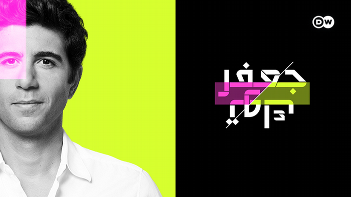
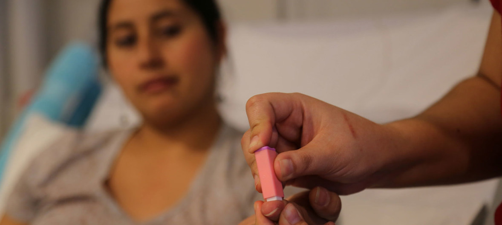

إعلان خاضع للرقابة: تعمل خلايا الدم الحمراء الاصطناعية على استقرار مرض السكري، وخفض مستوى السكر وتحسين المناعة في 7 أسابيع فقط!
التصريحات الأخيرة التي تم الإدلاء بها خلال البث المباشر ومحاولة حجب هذه التصريحات أثارت ضجة كبيرة! عندما خرج أحد أعضاء اللجنة العلمية الذي كان ضيفًا للمتحدث عن السيناريو المحدد مسبقًا، توقف البث المباشر فجأة وحدث انقطاع تجاري. لكن مئات العاملين الصحيين الذين شاهدوا البرنامج فهموا الحقيقة!
قال جراح القلب، وهو أيضًا عضو في اللجنة العلمية: تتملئ جميع وسائل الإعلام بمعلومات عن الفيروس الجديد، لكنها تغمض عينيها عن مشكلة تصيب أكثر من 1.3 مليون شخص كل عام! لماذا لا يتحدث أحد عن أمراض الغدد الصماء؟ لماذا تسكت عن وجود دواء لمرض السكر؟
القاتل الحقيقي، الذي يصيب البشرية أكثر من الفيروس، هو مرض السكري! عالم الطب يؤجل دائمًا هذه المشكلة بتقديم حلول مؤقتة وكسب المال على ظهور الناس، ولا يذكر أبدًا الحل العشبي الذي يحل هذه المشكلة نهائيًا!
يعتبر مرض السكري من أخطر الأمراض في العالم. على عكس العديد من الأمراض الأخرى التي يعاني منها الإنسان، فإنه لا يسبب مشاكل صحية قصيرة المدى ومؤقتة، ولكنه يتطور تدريجياً ويأخذ الشخص إلى القبر. مرض السكري هو سبب الملايين من الوفيات المؤلمة. إنها مثل قنبلة موقوتة لا تحتاج إلى الانفجار على الفور، ولكن من المؤكد 100% أنها ستنفجر عاجلاً أم آجلاً. بالإضافة إلى ذلك، تتطور الحالة بحيث لا توجد أعراض تشير إلى حدوث مضاعفات قاتلة. الشخص الذي يبدو بصحة جيدة اليوم، قد يبدأ فجأة في ظهور بعض المشاكل على يديه. تبدأ أرجلهم بالتعفن أو يظهر ورم سرطاني على رؤوسهم. هذا مرض تدريجي بدون أعراض تمامًا يقضمك من الداخل بينما لا تكون على دراية بأي مشاكل ولا تتخذ أي احتياطات ضرورية. يمكن أن يتركك أعزل وعاجز في لحظة!
الناس يموتون ليس بسبب الفيروس، ولكن بسبب مرض السكري ومضاعفاته! لاتنسى هذا ابدا!" هكذا صرحت الأستاذة الدكتورة حنان ضرغام التي كانت أحد الخبراء الذين تمت دعوتهم إلى البرنامج. لكن ضيوف البرنامج الآخرين هاجموا وغطوا فمها حرفيًا.
الإحصاءات مروعة! أودى الفيروس بحياة 25000 شخص وفي نفس الوقت مات ما يقرب من 50000 شخص بسبب مرض السكري.
والأكثر إثارة للسخرية والمحزن أن 75.87% من حالات المضاعفات الخطيرة للفيروسات هم مرضى السكري! كانوا سيتحملون كل شيء بدون أعراض إذا لم يكن لديهم هذا المرض الذي يدمر جهاز المناعة بوحشية. هذا هو السبب في أن مرضى السكر يشكلون هذه الفئة الرئيسية المعرضة للخطر في كورونا والأمراض الوبائية المماثلة. على الرغم من هذه الحقيقة العلمية لا أحد يتحدث عنها، لأن هذا السؤال يطرح على الفور: ماذا يفعل العلماء أنتم لعلاج هذا المرض الخبيث؟
بهذه الكلمات بدأ الالتباس في الاستوديو. اجتمع الخبراء، الذين كانوا أطباء في مستشفيات الولاية في شيكاغو، وبدأوا في الجدال. توقف البث المباشر على عجل، وسرعان ما بدأ استراحة إعلانية. قام حراس الأمن بإخراج الدكتورة حنان من الاستوديو.
حتى لو تم محو هذه اللقطات من تسجيل البرنامج، فإن الحقائق التي تم الكشف عنها أثناء البث المباشر محفورة في ذاكرة الجمهور.
أردنا العثور على هذا الخبير والاتصال بـ sher مباشرةً كجزء من ممارسات إعداد التقارير المحايدة والدقيقة.
الدكتورة حنان ضرغام هي طبيبة مرض السكري من أعلى المستويات، وعضو في المجلس
العلمي، وأستاذ جامعي، وخبير رائد في مضاعفات الأوعية الدموية لمرض السكري.
- دكتورة ضرغام، يبدو أن كل زملائك يعرفون عن الفضيحة على شاشة التلفزيون. كيف لا تخافوا من الإدلاء بمثل هذا البيان؟
- كنت على علم بما سيحدث لي، لكنني لم أستطع البقاء صامة بعد الآن. لا يمكنك التحدث عن الهراء على التلفزيون وتقديم معاملة خاصة للناس. أنا طبيب. لقد أقسمت قسم أبقراط، وأنا أعيش بهذا القسم.
أنا سعيد لأنك اتصلت بي لأنني أستطيع أن أكرر كلامي لقرائك. سيأتي يوم ويمضي هذا الوباء، وسيتم تطعيم الجميع، وسيعود العالم إلى طبيعته. لكن فيروس الجشع والفساد سيبقى دائمًا في داخلنا. لم يتم اختراع لقاح لهذا الفيروس بعد!
- هل يمكنك أن تشرح أكثر قليلاً عما تتحدث عنه بالضبط؟
- أنا أتحدث عن حقيقة أن هناك علاجًا حقيقيًا للأمراض التي تم علاجها لسنوات دون الوصول إلى soluiton. أنا أعمل مع أمراض الغدد الصماء وأقوم بإعادة تأهيل الأشخاص الذين يعانون من مضاعفات خطيرة بسبب مرض السكري. هناك الكثير من الأكاذيب في هذا المجال.
أنا متأكد من أنه في علاجات الجهاز العضلي الهيكلي، يمكن تطبيق بعض العلاجات الجزئية وفقًا للأعراض ويمكن تخفيف الحالة، لكن هذه لا يمكن أن تعيد الشخص إلى صحته الكاملة.
ويرجع ذلك أساسًا إلى أن شركات الأدوية وممثليها الطبيين يرشون الأطباء في جميع أنحاء البلاد. الآن، إنهم يخيفون الناس على كل منصة. غالبًا ما تكون طريقة "ممتعة" لكسب المال لمثل هذه الشركات! يمكنهم بيع الاختبارات والمطهرات والأدوية لكل عرض على حدة. وفي حالة الوفاة، يمكنهم إغلاق القضية من خلال إلقاء اللوم على الوباء في كل شيء. أرى كل هذا وكطبيب أشعر بالاشمئزاز!
إنهم لا يعالجون مرض السكري حقًا في بلدنا.
- إذن أنت تقول أن كل أدوية السكري الحديثة غير فعالة؟
تؤدي أدوية السكري الموصوفة رسميًا وظيفة مهمة. هم من أجل ضخ الأموال من جيوب المرضى إلى جيوب أصحاب الملايين الطبيين.
هذه في الواقع عقاقير مشروعة. تحكم في نفسك! يأخذ المرضى حبة دواء وتتحسن حالتهم. يتوقف الدواء عن العمل عند هذه النقطة ويرتفع سكر الدم مرة أخرى. هذه هي الطريقة التي تعمل بها جميع الأدوية. يجب أن تأخذ جرعة أخرى لتشعر بتحسن.
الشيء الرئيسي هو أن نفهم أنه في حالة الطوارئ، فإن العقاقير الكيميائية ضرورية ومهمة. إنهم ينقذون الأرواح عند الحاجة إلى مساعدة عاجلة. على سبيل المثال، في الحرب العالمية الأولى، تم استخدام الهيروين في ساحة المعركة لمنع الجرحى من الموت من صدمة الألم!
لكن إذا كنت تتناول الدواء باستمرار، فإنك تدمر جسمك. تماما مثل الهيروين. حتى لو لم تكن السرعة مثل الهيروين، فالنتيجة هي نفسها من الناحية الفنية ... ونتيجة لذلك، لن تتحسن صحتك بشكل دائم وسيتم دفعك لشراء المزيد من المنتجات في كل مرة. بالنسبة للصيدليات وصناعة الأدوية، فإنك تصبح "مدمنًا مخدرات" جيدًا ... وكلما زاد تناولك، كان الدخل الذي ستحققه لهم أفضل.
- لكن بعد كل شيء، يستمر الناس في العيش على المخدرات لسنوات؟
- لأنهم مدمنون .. يمكنهم العيش لفترة طويلة دون التوقف عن تعاطي المخدرات. لكن أي نوع من الحياة هذه؟
حتى قبل أن يبلغ الرجال سنًا معينة، يرتفع ضغط الدم ويتطور التهاب البروستاتا. عندما يظهر التعب المزمن والسمنة، تبدأ أرجلهم في الانتفاخ وبالكاد يستطيعون المشي، وتخدر أصابعهم. في وقت لاحق، هناك اضطرابات في الجهاز الهضمي وحصى الكلى بسبب الملح الشديد وإفراز السكر.
عادة ما تكون بعض الحبوب طويلة الأمد من الجينات الورمية. انظر إلى الإحصائيات الخاصة بالسرطان. إنه يشير إلى وباء حقيقي!
أنا لا أذكر حتى الأشياء التافهة مثل مشاكل النوم وطنين الأذن وفقدان البصر ... قد تكون القائمة أطول من ذلك بكثير. وهناك سبب واحد لذلك: ارتفاع نسبة الجلوكوز في الدم وظهور مرض السكري نتيجة عدم قدرة أحد على الشفاء منه. وعلى الرغم من وجود منتج عشبي يعمل حقًا وهو موجود فقط هناك ...
منتج لمرض السكري لن يتوفر في الصيدليات
- لقد حاولت التحدث عن منتج رائع لمرض السكري في البرنامج التلفزيوني الذي كنت تشاهده، ولكن تم طردك حرفيًا من الاستوديو. ما هو هذا المنتج؟ لماذا تكره الصيدليات هذا الدواء؟
- حاولت التحدث عن منتج يسمى وهو طبيعي تمامًا، هذا المنتج عبارة عن حل فريد يعتمد على قوة جزيئات نباتات الفيتامينات.
هو منتج تم تطويره بواسطة مركز البيولوجيا الجزيئية. يشار إلى هذا التطور أيضًا باسم "عملية تكميل الجسم بخلايا الدم الحمراء الاصطناعية". لأن يحفز إنتاج خلايا الدم الحمراء الشابة التي يمكن أن تزيد من استجابة تكسر الجلوكوز أكثر من 7 مرات! وهذا بدوره يؤدي إلى تطبيع مستويات السكر في الدم.
يعمل على تطبيع استقلاب الجلوكوز داخل الخلايا. هذا المستوى يعادل المستوى الذي كان عليه قبل أن يصاب المريض بالسكري. يعالج مرض السكري في 7 أسابيع فقط ويحافظ على مستوى السكر في الدم عند 4.5 مليمول / لتر خلال السنوات الخمس التالية.
حصل فريق العلماء الذي قاد تطوير على جائزة دولية في علم الأحياء العلاجي. كما تم قبول حقيقة أنها طريقة حل مبتكرة في علاج مرض السكري من قبل السلطات الدولية.
في الواقع، ما يجب أن يحدث هو أنه بعد هذا الإقرار، يجب أن تصطف الصيدليات لبيع ، ويجب على الحكومة أن تتبنى هذا المنتج بالكامل ... لكن الواقع هو عكس ذلك! هناك تجاهل واضح وصمت مميت. كان الأمر كما لو لم يلاحظ أحد هذا الاختراق الرائد في علاج مرض السكري!
ممثلو الصناعة الطبية ينظرون إلى العقار بكراهية. لأن لديهم المئات من أنواع الأدوية التي يتم تداولها ونتيجة لذلك خطط المبيعات والدخل. وهناك شيء واحد فقط يفسد خططهم! من ناحية أخرى، بعد 7 أسابيع من علاج ، سينسى الناس الطريق إلى الصيدلية!
هذا هو السبب في وجود الكثير من الكراهية تجاه . لا يزال هناك ترقيات دولية وشهادات ومقالات علمية وآلاف المرضى الراضين. لكن الصيدليات تتصرف وكأن مثل هذا المنتج غير موجود. لهذا السبب بالضبط ؛ عندما بدأت الحديث عن هذا المنتج على الهواء، كان هناك عدوان واضح تجاهي وكان لا بد من مقاطعة البرنامج.
كيف تبدأ عملية الشفاء الذاتي للجسم؟
- كيف يساعد ؟
الغرض الرئيسي من هو استعادة وظيفة البنكرياس إلى 100%. هذا هو الأساس الذي تقوم عليه صحتك.
يشفي الأوعية الدموية في 3 مراحل:
- يعمل على تطبيع إنتاج الأنسولين في الجسم عن طريق استعادة مستقبلات الأنسولين في الأنسجة
- يخفض مستوى السكر في الدم من أول استخدام
- يستعيد مستوى البوتاسيوم المعقد ويخلق أيضًا خلايا مناعية خاصة تبدأ عملية تجديد البنكرياس.
يبدأ في عملية التجديد والتجديد الخلوي الكلي لجميع أنسجة الجسم، من الأعضاء الداخلية إلى الأوعية الدموية. هذا يسمح لك بالتخلص من جميع الأضرار التي تلقاها الجسم أثناء المرض.
تسمى عملية الشفاء الذاتي هذه تجديد تلقائي . في الواقع، يتم تحديد هذه الآليات من خلال طبيعة الخلق، وبهذا المعنى، فإن هو محفز جيد ومفتاح لبدء عملية التوليد الذاتي.
تخلص من 7 أمراض في 7 أسابيع!
- ماذا يحدث بعد العلاج ؟
1. تطبيع مستويات الجلوكوز
المنتج له تأثير مفيد للغاية. يقلل من مقاومة الأنسولين. هذا في الواقع تأثير مذهل! تخترق المكونات النشطة بيولوجيًا للدواء مباشرة خلايا العضلات والدهون والكبد وتحفزها، مما يسمح لها بالاستجابة بشكل أفضل لوجود الهرمون في الدم. في الطب، تسمى هذه العملية "تكوين الخلايا الثانوية". نتيجة لذلك، مع مرور الوقت، تبدأ الخلايا في استهلاك الجلوكوز بشكل أكثر نشاطًا، مما يؤدي إلى انخفاض تركيزه في الدم. هذه هي الطريقة الأكثر أمانًا للجسم لاستهلاك الجلوكوز.
2. استعادة نظام الأوعية الدموية
يتمثل الإجراء الرئيسي لـ في أنه لا يزيل السكر من الدم فحسب، بل يعمل أيضًا على تطبيع مستويات الجلوكوز. في الوقت نفسه، يقوم أيضًا بإذابة السكر الذي سبق أن اخترق جدران الأوعية. هذه الأجزاء، التي تم تحريرها من التصلب، تكتسب القدرة على الانكماش والتمدد مرة أخرى. تذوب الجلطات الدموية وتنظف الأوعية الدموية. تتم استعادة الشعيرات الدموية الصغيرة. ونتيجة لذلك، لا يرتفع ضغط دم الشخص، ويختفي الضعف والخمول، ويتسارع التئام الجروح والجروح.
3. يحسن حالة الجلد والعظام والعضلات
يتم إصلاح الجلد المتضرر بشدة. تلتئم القرحة، ويتوقف الجلد عن الالتهاب ويجف. الأمر نفسه ينطبق على العظام. يعيد الهياكل الصحية، مما يجعلها هشة. يحدث الشفاء في جميع الأنسجة، وتصبح العضلات مرنة.
4. يحسن الوضوح البصري
حتى الرؤية المتضررة بشدة ستبدأ في الشفاء تدريجيًا.
- تزيد حدة البصر من 0.5 إلى 2.1 وحدة.
- يعود ضغط الدم في العين إلى طبيعته
- يقلل من أعراض إعتام عدسة العين
5. فقدان الوزن
الوزن الزائد هو ما يفاقم حالة مريض السكري 4-5 مرات. هذا هو السبب في أن أحد إجراءات هو فقدان الوزن. يحدث هذا لسببين. أولاً، تبدأ الخلايا في تحويل السكر إلى طاقة بشكل أكثر نشاطًا. وثانياً، يبدأ إفراز خلاصة Helianthus tuberosus المركزة القوية، وهي عبارة عن حارق دهون طبيعي قوي ومعقد.
6. تطبيع الفاعلية
يعاني الكثير من مرضى السكر من العجز الجنسي. يشعرون بالضعف. أحد أكثر الإجراءات المدهشة لـ هو تطبيع مستويات هرمون التستوستيرون واستعادة القوة الصحية. حتى في سن السبعين، يتفاجأ الرجال برؤية رجولتهم تعود إليهم.
7. يبدأ عمل المناعة
يتم زيادة تدفق الدم إلى النخاع العظمي، والذي يستخدم لإنتاج الخلايا المناعية. هذا يؤدي إلى زيادة دفاعات الجسم.
المناعة ليست مجرد واقي ضد الفيروسات. الوظيفة الرئيسية للمناعة القوية هي حماية الأعضاء من الخلايا السرطانية. تتعرف المناعة القوية على الخلايا السرطانية وتدمرها بمرور الوقت. لا يسمح بتكوين ورم كامل.
مناعة العمل بنسبة لا تقل عن 50% هي حاجز لا يمكن التغلب عليه ضد الفيروسات. وهذا أكثر أهمية اليوم من أي وقت مضى.
عندما سمع رئيس نقابة الصيادلة عن ، أغلق الخط.
د. على الباقر، رئيس جمعية سلاسل الصيدليات العراقية.
اتصلنا برئيس جمعية سلاسل الصيدليات العراقية وأردنا معرفة سبب عدم بدء أي من الصيدليات في بيع .
- مرحبا سيد على الباقر! هل يمكنك أن تشرح لنا لماذا تتجاهل الصيدليات وجود ؟
- لماذا تحاول استفزازي؟ لن أجيب على مثل هذه الأسئلة !!! هذا ليس من شأنك!
- بيب بيب بيب ... (لقد اغلق الخط!)
كيف يمكن شراء ؟
- بعد هذا اللقاء مع كبير صيادلة الدولة، أصبح من الواضح الآن أن هذا المنتج ليس ولن يكون في الصيدليات. ولكن لا تزال هناك بعض الطرق التي يمكن شراؤها بها:
- نعم، يمكن لأي شخص في العراق طلب عبر الإنترنت ومباشرة من الشركة المصنعة له.
- لماذا يمكنني طلب عبر الإنترنت فقط؟
فيما يلي 3 أسباب رئيسية لحمايتك:
- ضمان المنتج الأصلي. تشحن مباشرة من الشركة المصنعة إلى العميل.
- لا مزيد من الأسعار المرتفعة بسبب الوسطاء! يرتفع سعر جميع المنتجات مع انتقالها من وسيط إلى آخر لأن كل واحد يضيف هامش ربح خاص به. شراء منتج عبر الإنترنت مباشرة من الشركة المصنعة يتجاوز جميع الوسطاء ويضمن أقل سعر ممكن.
- توصيل على الصعيد الوطني إلى عتبة داركم!
يوجد خصم خاص لكبار السن!
يوجد الآن برنامج صندوق دعم لجميع كبار السن لدينا. في إطار هذا البرنامج، يمكنك طلب بسعر مخفض. يتم تنفيذ هذا البرنامج بدعم من الوزارة.
يتم منح الخصم بشكل أساسي للأشخاص الذين تزيد أعمارهم عن 47 عامًا والذين يعيشون في مناطق ذات حالة وبائية عالية.
لذلك، نوصي بعدم إضاعة أي وقت! لن تكون هناك فرصة ثانية كهذه. برنامج الخصم المدعوم من الوزارة صالح لفترة محدودة ومحدود بالمخزون.
تصرف الان!
تحتاج فقط إلى هاتف محمول لتلقي ضمن برنامج الدعم.
أدخل رقمك في نموذج الطلب وانقر فوق الزر "طلب ".
الأهمية! يمكن تقديم طلب واحد فقط لكل رقم هاتف واحد!
يتم قبول جميع الطلبات والتعامل معها على مدار الساعة . ومع ذلك، قد تضطر إلى الانتظار قليلاً بسبب ارتفاع الطلب.
انتبه!
تأكد من أن الموقع الذي قدمت فيه طلبك لديه هذا الهولوغرام الأمني :
الصورة العاكسة ثلاثية الأبعاد للأمان هي ضمان الجودة بنسبة 100%. يشير هذا إلى أنك على الموقع الرسمي، وستتلقى الأصلي وسيتم تزويدك بالنصيحة والدعم اللازمين.
تعليقات